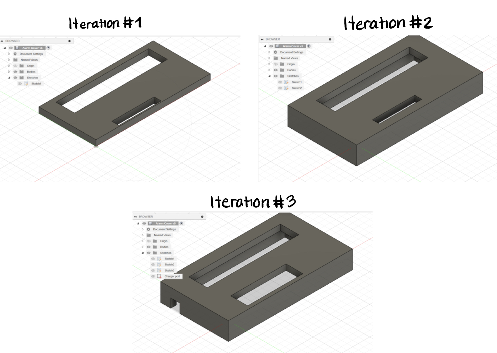

1st Time Soldering! / Clock!
On my first day of soldering, I must admit, I was quite tired! This, coupled with the fact that it was my first time soldering meant that I had a bit of a slow start on the soldering process. Initially, I had been heating up the solder and attempting to melt it onto the metal junctions of our digital clock. This method did not work for me well, as it often led to imprecision, not enough, or too much solder. Something I knew that I would want to avoid was crossing over, because at the rate that I was going, I did not want to risk creating a short circuit. During our next day of soldering, I had made a considerable improvement in my soldering skills and was able to finish that day. So what was it that so drastically increased my efficiency? Well, this time around I was heating up the prongs sticking out the back of our digital clock BEFORE I applied solder. My soldering now looked way cleaner than it had before, which was not only good for the look of the board, but also for its proper functioning. Despite this improvement in my soldering abilities, I still had some minor frustrations along the way. Of these frustrations was making sure that the electronic components would lay flat against the board as I soldered them together. I solved this by using a helping-hand, and bending the prongs of my electronic components such that they would hold in the position which I had intended for them. Another frustration was having to work around the various metal holes throughout the board. Due to their close proximity to one another, I had to make my best attempt at being as precise as I could. This was mostly just a matter of practice. The last issue I faced (albeit it wasn’t too big of an issue) was placing the same amount of solder at each prong-to-metal junction. This required the occasional use of a solder pump or the reapplication of solder. In the end, I was able to cut out the unnecessary metal wire sticking out from the back of the board, and connect it to a battery. It worked on the first try! Now, I just needed to permanently connect the battery holder to the white wire that plugs into our clock. Using some wire cutters, I gently removed the insulation from the edges of battery-holder wires, then wrapped them around the end of the exposed white wire. I then soldered the wire ends together and sealed them off using electric tape.
Starting Up:
Almost Done:
Works!:

Overall, I found this process to be quite therapeutic. I did burn myself once, unfortunately, but this was no obstacle! I kept going while listening to some tunes and learned that I am more capable of soldering than I had thought initially. I learned to have patience and confidence in my abilities, and that over time (in this case, a class and a half, haha) these qualities can bring about wonderful results!
Schematics
Here are some schematics I drew for the four 4 iterations of the alarm enclosure we would eventually print. The schematics that embody these iterations have a rather simplistic look to them, focusing largely on providing a snug fit to the electronic components of our clock. The first of our prints was merely a dummy print used to test fittage on the face of our clock. This print only took about 40 minutes to print, which was the aim for all our iterations minus the last print, which took about 4.5 hours. Surprisingly this first iteration lined up rather nicely with the buttons and number-panels of the clock.

The second iteration of our enclosure was created to act as a test fit for the entire body of the clock. This iteration also came out nicely, although there were still some minor improvements to be made.

Of these improvements, was the addition of an opening to plug in a power supply, and the enlargement of the small rectangular opening on the face of our clock. The purpose for the enlargement of this opening was to make it easier for the user to press the small buttons of the clock. Previously, the buttons were almost impossible to press (unless you are me and have small fingers, of course! hahaha).

Our fourth and final iteration of our clock was made to provide a back and attachment sites to connect the front portion of our enclosure. Unfortunately, the 6 pegs sticking out the front portion of our enclosure were not all that structurally sound. Promptly after attempting to connect the front and back portions to one another, every single one of the pegs broke! It was a rather tragic outcome for our “final” iteration, but in the end, it was really all okay!!!
We learned something new today and that was that we need to make the pegs thicker! Of course, this would also mean that we’d need to increase the thickness of the walls to accommodate for the pegs, and accordingly adjust the sizes of the holes for attachment. Other improvements we would’ve liked to have made include making button covers to improve user friendliness and accessibility, and the addition of a larger enclosure around our small enclosure (we’ll talk about this in a sec)...
Measurements


Overall, while our design stayed rather simple, I learned a substantial amount about how iteration can facilitate the process of troubleshooting and design, even if the steps to get there are rather small!
Bread, Why do you Tantalize Me?!?
Ultimately, we wanted to encase our clock in the bread design, as it seemed like the most easy-to-implement and fun out of the bunch. After making my sketch for the case, I downloaded a bread stl file off Thingiverse and got to work. The first problem was an inconsistency between the sizes of our bread enclosure and the size of the smaller case holding the electronic components of our clock in place. By comparison, the bread looked huge! I scaled the bread to around the same size as the smaller case, then rotated and translated the case such that the buttons of our clock would stick outward from the side of the bread. After doing this, I noticed that it probably would be difficult to have the clock face in this orientation without it falling out. At first we thought of sealing the back of our smaller case completely. The only problem with this was getting the clock inside this case in the first place! We then thought to cut out a rectangular hole from the bottom of the bread casing and slip the clock into the small case from there. The problem with this solution was that gravity would pull the clock right out again! Due to time constraints, this plan was unfortunately a miss and we decided to forgo this design shown here:
Fusion 360
Of the problems that caused us the most frustration, Fusion 360 was responsible for all of them! In particular, constraints and selection tools were of particular difficulty. While this is most likely the result of some mistake on our part, we could not identify what that mistake was, and why the selection tool on either of our laptops was so finicky. It seemed as though it would only sometimes select those sketches that we had identified, which was terrible for our efficiency. The problem that had mostly been confined to my partner, was that of constraints. Unfortunately, we are both battling to fully understand this Fusion 360 functionality. In the meantime, my partner opted to focus on creating a simplistic Fusion 360 sketch that would satisfy the needs of a working enclosure (as opposed to some of the complex designs of some of our classmates). I must mention however, that I have always been a minimalist in my approach to life and design, so I say less is more!
PrusaSlicer
As mentioned briefly, our first print took only about 40 minutes to print, which was the aim for all our iterations except the last print, which took about 4.5 hours. With the exception of our last print, the reason we had aimed for short print times was because we recognized these iterations to be prototypes that primarily served to identify and tackle only a few problems at once. Handing too many problems in one iteration would have proven very frustrating, and if we had chosen to take that route, it is likely we wouldn’t have finished in time. That being said, none of our prints took more than 5 hours to print, which for most projects is relatively reasonable. Otherwise, some settings we changed in Prusa to reduce print time, included an increased Z-lift value and a only about 10% infill. On the contrary, the cause for our final iteration’s significant change in print time was Prusa’s “QUALITY” print settings, which were necessary to ensure peak stability and structural integrity.
To Conclude
This project has been a real journey, highlighting the importance of persistence and adaptability in the face of challenges. From the initial struggles with soldering to the iterative design process and the complexities of using Fusion 360, each step underscored the value of continuous learning and improvement. Despite moments of frustration, the experience emphasized the significance of patience, teamwork, and the willingness to embrace trial and error as integral parts of the learning process.
About Me
I am Aiden Sanchez, a new first-year here at Brandeis University. I am an aspiring biomedical engineer with various interests ranging from STEM to the arts. I am so excited to continue along this journey with you!
Here is a picture of me with my grandmother whom I love very much